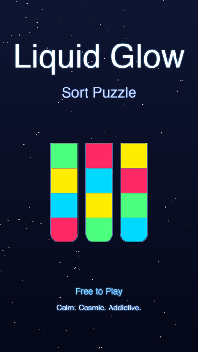
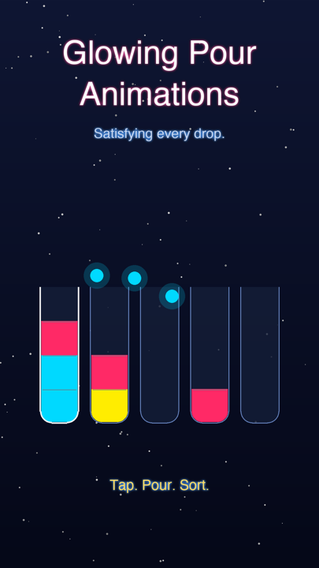

A calm, cosmic sort puzzle. Pour glowing neon liquids between glass tubes and sort each one by color. Easy to learn, deeply relaxing, surprisingly addictive.

Calm, cosmic sort puzzle
The World
🌌
Glass tubes filled with glowing neon liquid float in deep, starlit space. Engine-rendered lighting and particles make every pour soft and satisfying — a quiet, ASMR-like place with no timers and no pressure.
How to Play
🧩
Tap to pick up a color, tap to pour. Sort every tube into a single color to clear the level.
Tap a tube to lift the color on top.
Tap another tube to pour it in.
You can only pour onto the same color or an empty tube — sort every tube to one color to win.

Tap. Pour. Sort.
Highlights
✨
100+ hand-tuned, solvable levels
Golden bonus stage every 5 levels for extra stars
Ambient original soundtrack, free volume & mute
Auto-save, level select, and gentle helpers — play offline at your own pace